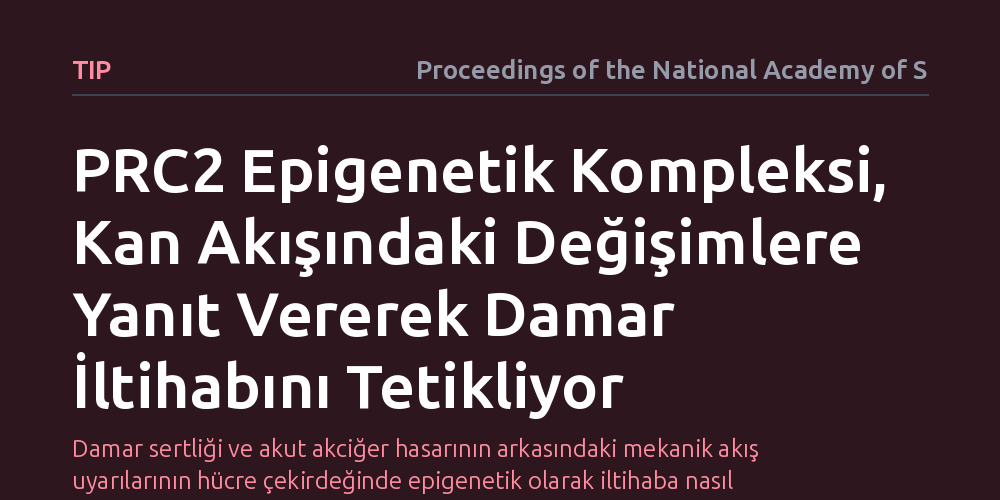

TIP · Proceedings of the National Academy of Sciences · 2026-09-12
Araştırmacılar, kan akışının oluşturduğu mekanik kuvvetlerin damar iç çeperinde iltihaplanmayı nasıl başlattığını inceledi. PRC2 adlı epigenetik baskılayıcı kompleksin, akış dinamiklerine duyarlı endotel hücre durumlarını kontrol ederek damar iltihabına yol açtığı belirlendi.
Damar sertliği ve akut akciğer hasarının arkasındaki mekanik akış uyarılarının hücre çekirdeğinde epigenetik olarak iltihaba nasıl dönüştüğünü göstererek yeni hedefe yönelik tedavilere kapı aralıyor.

Kalp ve damar hastalıkları, özellikle damar sertliği ve akut akciğer hasarı, dünya genelinde sakatlık ve erken ölümlerin en yaygın nedenleri arasında yer alıyor. Ancak damarların her bölgesi bu hastalıklara aynı derecede yatkın değil. Kanın hızlı ve düzenli aktığı düz damar hatları genellikle korunurken, damarların kıvrıldığı veya çatallandığı bölgelerde iltihaplanma çok daha kolay gelişiyor. Bu durum, kan akışının oluşturduğu fiziksel sürtünme kuvvetlerinin damar duvarındaki hücrelerin biyolojik davranışını doğrudan belirlediğini gösteriyor.
Damarların iç yüzeyini tek sıra halinde kaplayan endotel hücreleri, kan akışının yönünü ve hızını algılayan hassas biyolojik sensörler gibi çalışıyor. Düzenli akış altında sakin ve koruyucu kalan bu hücreler, düzensiz ya da yavaşlayan akış bölgelerinde iltihap yanlısı bir kimliğe bürünüyor. Bilim insanlarının uzun süredir çözmeye çalıştığı temel soru ise, damar duvarındaki bu mekanik akış farkının hücre çekirdeğine ulaşıp genleri nasıl kontrol ettiği ve iltihap sürecini nasıl başlattığıydı.
Araştırma ekibi, endotel hücrelerinin kan akışından kaynaklanan mekanik gerilimlere verdiği tepkileri hücresel ve moleküler düzeyde inceledi. Laboratuvar ortamında kanın damar çeperine uyguladığı farklı sürtünme kuvvetlerini taklit eden akış düzenekleri kuruldu. Böylece damarları koruyan düzenli akış koşulları ile damar sertliğine zemin hazırlayan düzensiz akış koşulları karşılaştırmalı olarak analiz edildi.
Çalışmada özellikle epigenetik mekanizmalara, yani DNA dizilimini değiştirmeden hangi genlerin açık hangilerinin kapalı tutulacağını belirleyen düzenleyici sistemlere odaklanıldı. Mekanik stres altındaki hücrelerin gen ifade profilleri ve kromatin yapıları taranarak, fiziksel uyarının hücrenin çekirdeğindeki hangi protein komplekslerini harekete geçirdiği adım adım takip edildi.
Elde edilen sonuçlar, PRC2 (Polycomb Baskılayıcı Kompleks 2) adı verilen epigenetik yapının kan akışına duyarlı endotel hücre durumlarını doğrudan yönettiğini ortaya koydu. Normal koşullarda gen susturucu olarak görev yapan bu kompleks, hücrelerin sağlıklı kimliğini muhafaza etmesine yardımcı oluyor. Ancak kan akış dinamikleri bozulduğunda ve mekanik gerilim değiştiğinde PRC2'nin işleyişi farklılaşarak hücreyi iltihap yanlısı bir duruma sürüklüyor.
Bu durum, damar iç çeperindeki hücrelerin savunma hücrelerini kendine çeken ve damar sertliğini başlatan yangısal molekülleri üretmesine neden oluyor. Çalışma, mekanik kuvvetlerin hücre çekirdeğindeki epigenetik baskılayıcıları doğrudan yönlendirerek damar iltihabına yol açan hücresel durumları nasıl tetiklediğini somut bir mekanizmaya bağlıyor.
Damar sertliği ve vasküler iltihap günümüzde ağırlıklı olarak kolesterol düşürücü ilaçlar ve kan basıncının kontrol altına alınmasıyla sınırlandırılmaya çalışılıyor. Ancak bu yaklaşımlar, kan akışının mekanik dengesizliklerinden kaynaklanan yerel damar iltihabını tamamen ortadan kaldırmakta yetersiz kalabiliyor. Akışa bağlı iltihabın arkasındaki epigenetik mekanizmanın aydınlatılması, damar hasarının doğrudan hücresel kaynağında hedeflenebileceğini gösteriyor.
Bununla birlikte, PRC2 gibi epigenetik komplekslerin vücudun pek çok dokusunda hayati görevleri bulunuyor. Bu nedenle bu mekanizmayı tamamen durdurmak yerine, sadece düzensiz akışa maruz kalan damar bölgelerindeki zararlı etkilerini hedefleyecek hassas moleküler stratejilerin geliştirilmesi gerekiyor.